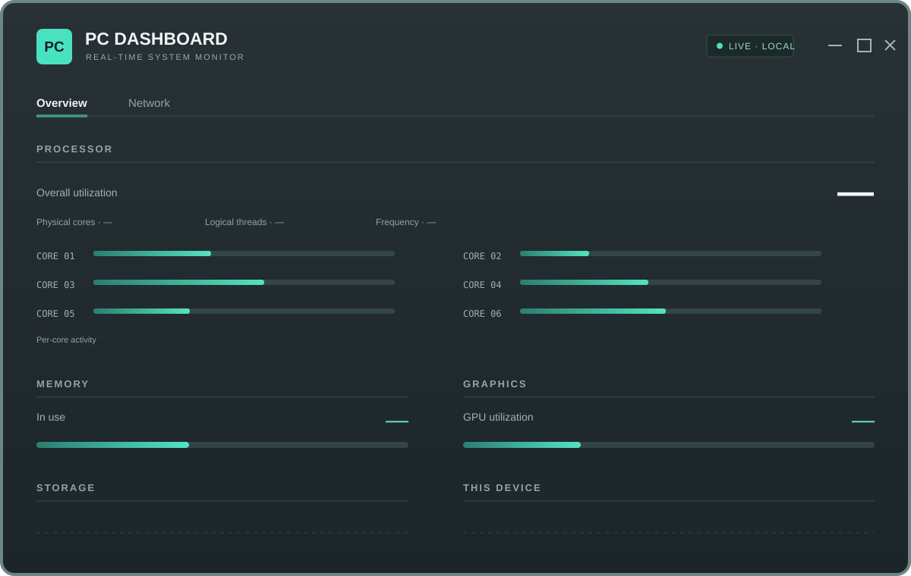

Desktop-Anwendung · Systemmonitoring
PC Dashboard
Systemdaten live lesen – in einer klaren Windows-Oberfläche.
Full-Stack-Entwicklung & KI
Ich bin Kevin. Ich entwickle Anwendungen für Web und Desktop und mache komplexe Daten in klaren Oberflächen verständlich.

Aktuelles Projekt
Live-Systemdaten in einer eigenständigen Windows-Anwendung.
Projekt ansehen01 / Projekte
Anwendungen und Experimente, vom Desktop bis zum Browser.
Desktop-Anwendung · Systemmonitoring
Systemdaten live lesen – in einer klaren Windows-Oberfläche.

Spielentwicklung · Reinforcement Learning
Ein vertrautes Spiel. Ein Spieler, der noch lernt.

Lieber direkt ausprobieren?
Zur Spielwiese02 / Der Mensch hinter dem Code
Mich interessiert der Weg von einer Frage zu etwas, das man benutzen kann. Das kann eine Webanwendung sein oder ein Desktop-Dashboard, das Systemdaten übersichtlich macht.
Im Praktikum habe ich in einer größeren Python-Codebasis Fehler behoben und Automatisierung verbessert. Viele meiner Pull Requests enthielten Tests oder Dokumentation. Daneben beschäftige ich mich mit Deep Learning und Reinforcement Learning.
Mehr auf GitHub03 / Notizen
Ein guter Anfang